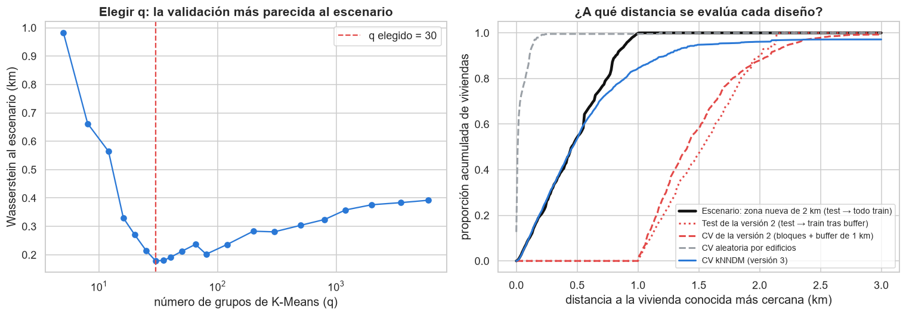
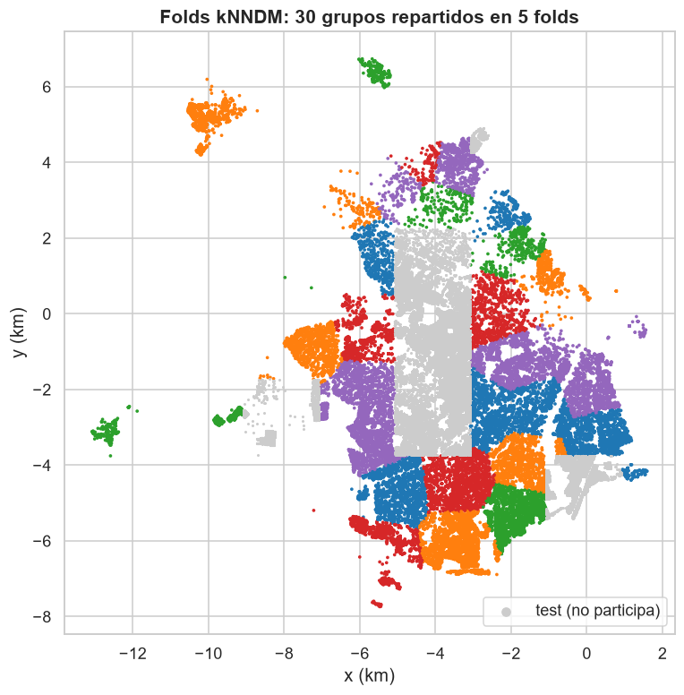

14. Validación por vecinos más cercanos y mejoras del modelo base (versión 3)#
Autores: María Carolina Cantillo Orozco (200179105) y Juan Camilo Oñoro Araujo (200177329)
Qué hace este capítulo
Pregunta que responde: ¿el buffer fijo de 1 km mide el escenario que queremos medir?, ¿qué cambia si la validación se diseña emparejando distancias al vecino más cercano?, y ¿mejoran el modelo base una logística ordinal o unos umbrales de decisión ajustados al F1 macro?
Datos: la misma partición del capítulo 2 (257 273 viviendas de entrenamiento y 65 145 de prueba en 7 bloques de 2 km). El test no cambia.
Recorrido: a qué distancia se predice en cada diseño (14.1); validación kNNDM (14.2); hiperparámetros con esa validación (14.3); test con y sin buffer (14.4); logística ordinal (14.5); umbrales para el F1 macro (14.6); resumen y decisión (14.7).
Por qué este capítulo. El buffer de 1 km del capítulo 8 fue un compromiso: el alcance del correlograma (2.6 km) vaciaba el entrenamiento y 1 km parecía una franja razonable. Pero un buffer fijo no dice qué escenario se está midiendo. Siguiendo la sugerencia del profesor (libro de Modelos Espacio-Temporales, cap. 2: grafos de k vecinos más cercanos y una validación que respete la dependencia espacial), este capítulo mide el escenario con la distancia al vecino más cercano y diseña la validación para que lo reproduzca. Todo lo demás (datos, partición, variables, Pipeline, métricas y test) es idéntico al capítulo 10.
# Datos y conjuntos de variables: idénticos al cap. 10.
datos = P.cargar_particion()
vm = dec["variables_modelo"]["valor"]
num_log = dec["num_log"]["valor"]
buffer_km = dec["buffer_km"]["valor"]
q_inf, q_sup = dec["winsorizacion_cuantiles"]["valor"]
min_frec = dec["onehot_min_frecuencia"]["valor"]
train_total = datos[datos.particion == "train"].reset_index(drop=True)
test = datos[datos.particion == "test"].reset_index(drop=True)
# El entrenamiento de la versión 2: sin las viviendas a menos de 1 km del test.
mantener = P.mascara_buffer(train_total[["x_km", "y_km"]].to_numpy(), test[["x_km", "y_km"]].to_numpy(), buffer_km)
train_buf = train_total[mantener].reset_index(drop=True)
conjuntos = {
"A_fisicas": {"num": vm["numericas"], "cat": vm["categoricas"]},
"B_fisicas+ubicacion": {"num": vm["numericas"] + vm["espaciales"], "cat": vm["categoricas"]},
}
B = "B_fisicas+ubicacion"
cols_B = conjuntos[B]["num"] + conjuntos[B]["cat"]
y_tt, y_tb, y_te = (d[C.OBJETIVO].to_numpy() for d in (train_total, train_buf, test))
print(f"Train completo: {len(train_total):,} | train de la versión 2 (tras buffer de {buffer_km} km): "
f"{len(train_buf):,} | test: {len(test):,} en {test.bloque.nunique()} bloques")
def pipeline_logistica(conj, clf=None, **kw):
"""Mismo preprocesamiento del cap. 10; el clasificador puede cambiar (multinomial u ordinal)."""
nums, cats = conj["num"], conj["cat"]
prep = M.construir_preprocesador([c for c in nums if c in num_log], [c for c in nums if c not in num_log],
cats, q_inf=q_inf, q_sup=q_sup, min_frecuencia=min_frec)
return Pipeline([("prep", prep), ("clf", clf if clf is not None else LogisticRegression(max_iter=1000, **kw))])
def xy(df):
return df[["x_km", "y_km"]].to_numpy()
Train completo: 257,273 | train de la versión 2 (tras buffer de 1.0 km): 144,586 | test: 65,145 en 7 bloques
14.1 ¿A qué distancia se predice?#
Para cada vivienda que se predice, la pregunta clave es a qué distancia está la vivienda más cercana cuyo estrato conoce el modelo. Con la autocorrelación del estrato (I de Moran 0.92), esa distancia decide casi todo: a 50 m el vecino conocido es casi una copia; a 2 km es otro barrio. Se mide con un punto por edificio (las unidades de un edificio comparten coordenada) y se pondera por viviendas.
# Un punto por edificio en cada conjunto.
xy_te_g, n_te, _ = V.puntos_unicos(xy(test), test.npn_edificio.to_numpy())
xy_tt_g, n_tt, _ = V.puntos_unicos(xy(train_total), train_total.npn_edificio.to_numpy())
xy_tb_g, n_tb, _ = V.puntos_unicos(xy(train_buf), train_buf.npn_edificio.to_numpy())
# (1) Escenario declarado en el cap. 2: predecir una zona nueva de 2 km cuyo entorno sí se conoce.
d_escenario = V.distancia_vecino(xy_te_g, xy_tt_g)
# (2) Lo que midió el test de la versión 2: el entrenamiento sin las viviendas a < 1 km.
d_test_v2 = V.distancia_vecino(xy_te_g, xy_tb_g)
# (3) La validación cruzada de la versión 2 (bloques + buffer, los mismos folds del cap. 10).
folds_v2 = P.folds_espaciales_con_buffer(train_buf, buffer_km, verbose=False)
d_cv_v2, n_cv_v2 = V.distancias_de_folds(xy(train_buf), train_buf.npn_edificio.to_numpy(), folds_v2)
# (4) Una validación aleatoria por edificios: cada edificio frente a todos los demás.
d_aleatoria = cKDTree(xy_tt_g).query(xy_tt_g, k=2)[0][:, 1]
distancias = {
"Escenario: zona nueva de 2 km (test → todo train)": (d_escenario, n_te),
"Test de la versión 2 (test → train tras buffer)": (d_test_v2, n_te),
"CV de la versión 2 (bloques + buffer de 1 km)": (d_cv_v2, n_cv_v2),
"CV aleatoria por edificios": (d_aleatoria, n_tt),
}
tabla_dist = pd.DataFrame({k: dict(zip(["p10 (km)", "mediana (km)", "p90 (km)"], V.cuantiles_ponderados(d, w)))
for k, (d, w) in distancias.items()}).T
tabla_dist
| p10 (km) | mediana (km) | p90 (km) | |
|---|---|---|---|
| Escenario: zona nueva de 2 km (test → todo train) | 0.1065 | 0.4534 | 0.8194 |
| Test de la versión 2 (test → train tras buffer) | 1.1029 | 1.5319 | 2.0130 |
| CV de la versión 2 (bloques + buffer de 1 km) | 1.0740 | 1.4062 | 2.0748 |
| CV aleatoria por edificios | 0.0000 | 0.0103 | 0.1091 |
El escenario que declaró el capítulo 2 es predecir una zona nueva de 2 km cuyo entorno sí está en la base: para la mitad de las viviendas de prueba, la vivienda conocida más cercana está a menos de 0.45 km (p90: 0.82 km). El buffer de 1 km cambió ese escenario: el test de la versión 2 se evaluó con el vecino conocido a una mediana de 1.53 km, y su validación cruzada a 1.41 km. Se midió algo más difícil que lo declarado: predecir un barrio a un kilómetro y medio de cualquier dato. En el otro extremo, una validación aleatoria por edificios evalúa a 10 m del vecino conocido: casi lo copia (por eso daba F1 0.62).
14.2 Validación kNNDM: folds que imitan el escenario#
La validación cruzada por emparejamiento de distancias al vecino más
cercano (k-fold Nearest Neighbour Distance Matching, kNNDM; Milà et al.
2022; Linnenbrink et al. 2024) arma los folds de modo que la distribución de
esas distancias en la validación se parezca a la del escenario de
predicción. El procedimiento (implementado en src/vecinos.py):
Se agrupan los edificios de entrenamiento con K-Means en q grupos compactos y los grupos se reparten en 5 folds estratificados por estrato (el mismo algoritmo voraz del cap. 2). Un q pequeño da folds grandes y lejanos, como bloques; un q grande da folds salpicados, como una validación aleatoria.
Para cada q se calcula, para cada edificio, la distancia al edificio más cercano de otro fold, y se compara con la distancia del escenario mediante la distancia de Wasserstein (el área entre las dos curvas de distribución acumulada, en km).
Se elige el q con la menor distancia de Wasserstein.
Es la idea del grafo de k vecinos más cercanos del libro de Modelos Espacio-Temporales (Rubio, cap. 2), aplicada a la validación: el tamaño de la zona excluida no se fija a mano, sale de la geometría del problema. El escenario se define solo con las coordenadas del test, nunca con su estrato.
t0 = time.time()
res_knndm = V.knndm(xy(train_total), train_total.npn_edificio.to_numpy(), y_tt, xy_te_g, n_te)
folds_v3 = res_knndm["folds"]
print(f"q elegido = {res_knndm['q']} grupos | Wasserstein = {res_knndm['W']:.3f} km "
f"(CV aleatoria: {res_knndm['W_loo']:.3f} km) | {time.time() - t0:.0f} s")
for i, (itr, iva) in enumerate(folds_v3):
print(f" fold {i}: entrenamiento {len(itr):>7,} | validación {len(iva):>6,} | "
f"estratos en validación: {np.unique(y_tt[iva]).tolist()}")
distancias["CV kNNDM (versión 3)"] = (res_knndm["d_cv"], res_knndm["pesos_g"])
tabla_dist = pd.DataFrame({k: dict(zip(["p10 (km)", "mediana (km)", "p90 (km)"], V.cuantiles_ponderados(d, w)))
for k, (d, w) in distancias.items()}).T
W_v2 = {k: V.wasserstein_distance(d, d_escenario, u_weights=w, v_weights=n_te) for k, (d, w) in distancias.items()}
tabla_dist["Wasserstein al escenario (km)"] = pd.Series(W_v2)
tabla_dist
q = 5: W = 0.982 km | mediana de G*_j = 1.325 km
q = 8: W = 0.662 km | mediana de G*_j = 1.032 km
q = 12: W = 0.564 km | mediana de G*_j = 0.950 km
q = 16: W = 0.330 km | mediana de G*_j = 0.650 km
q = 20: W = 0.270 km | mediana de G*_j = 0.600 km
q = 25: W = 0.214 km | mediana de G*_j = 0.489 km
q = 30: W = 0.178 km | mediana de G*_j = 0.464 km
q = 35: W = 0.180 km | mediana de G*_j = 0.424 km
q = 40: W = 0.191 km | mediana de G*_j = 0.393 km
q = 50: W = 0.213 km | mediana de G*_j = 0.351 km
q = 65: W = 0.237 km | mediana de G*_j = 0.288 km
q = 80: W = 0.202 km | mediana de G*_j = 0.250 km
q = 120: W = 0.236 km | mediana de G*_j = 0.198 km
q = 200: W = 0.283 km | mediana de G*_j = 0.152 km
q = 300: W = 0.281 km | mediana de G*_j = 0.132 km
q = 500: W = 0.304 km | mediana de G*_j = 0.103 km
q = 800: W = 0.324 km | mediana de G*_j = 0.082 km
q = 1200: W = 0.358 km | mediana de G*_j = 0.069 km
q = 2000: W = 0.376 km | mediana de G*_j = 0.057 km
q = 3500: W = 0.384 km | mediana de G*_j = 0.048 km
q = 6000: W = 0.392 km | mediana de G*_j = 0.041 km
q elegido = 30 grupos | Wasserstein = 0.178 km (CV aleatoria: 0.428 km) | 179 s
fold 0: entrenamiento 207,292 | validación 49,981 | estratos en validación: [1, 2, 3, 4, 5, 6]
fold 1: entrenamiento 202,661 | validación 54,612 | estratos en validación: [1, 2, 3, 4, 5, 6]
fold 2: entrenamiento 207,441 | validación 49,832 | estratos en validación: [1, 2, 3, 4, 5, 6]
fold 3: entrenamiento 207,897 | validación 49,376 | estratos en validación: [1, 2, 3, 4, 5, 6]
fold 4: entrenamiento 203,801 | validación 53,472 | estratos en validación: [1, 2, 3, 4, 5, 6]
| p10 (km) | mediana (km) | p90 (km) | Wasserstein al escenario (km) | |
|---|---|---|---|---|
| Escenario: zona nueva de 2 km (test → todo train) | 0.1065 | 0.4534 | 0.8194 | 0.0000 |
| Test de la versión 2 (test → train tras buffer) | 1.1029 | 1.5319 | 2.0130 | 1.0729 |
| CV de la versión 2 (bloques + buffer de 1 km) | 1.0740 | 1.4062 | 2.0748 | 1.0331 |
| CV aleatoria por edificios | 0.0000 | 0.0103 | 0.1091 | 0.4277 |
| CV kNNDM (versión 3) | 0.1044 | 0.4640 | 1.2273 | 0.1782 |


La distancia de Wasserstein es mínima con q = 30 grupos (0.18 km): folds formados por grupos compactos de 2 a 3 km repartidos por la ciudad. Con ellos la mediana de la distancia en validación (0.46 km) coincide con la del escenario (0.45 km); la cola es algo más larga (p90 1.23 frente a 0.82 km), así que la validación queda un poco del lado conservador. La validación de la versión 2 estaba a 1.03 km del escenario y la aleatoria a 0.43 km. Los cinco folds tienen entre 49 000 y 55 000 viviendas y los seis estratos en validación. Del test solo se usaron las coordenadas.
14.3 Hiperparámetros con la validación kNNDM#
Se repite la búsqueda del cap. 10 (misma rejilla de C y pesos de clase, misma regla de un error estándar) pero con los folds kNNDM y sin buffer: el entrenamiento de cada fold es todo lo que no está en su validación.
grid = {"clf__C": [0.01, 0.1, 1, 10], "clf__class_weight": [None, "balanced"]}
def regla_1se(cv_results, k=len(folds_v3)):
"""Índice de la combinación más regularizada (menor C) a < 1 SE de la mejor (igual que el cap. 10)."""
media = np.asarray(cv_results["mean_test_score"], float)
se = np.asarray(cv_results["std_test_score"], float) / np.sqrt(k)
i_mejor = int(np.nanargmax(media))
candidatos = np.flatnonzero(media >= media[i_mejor] - se[i_mejor])
c_vals = np.asarray(cv_results["param_clf__C"], float)
finalistas = [i for i in candidatos if c_vals[i] == c_vals[candidatos].min()]
return int(finalistas[int(np.argmax(media[finalistas]))])
def scores_por_fold(gs, i=None):
"""F1 macro de cada fold para la combinación i (por defecto, la elegida)."""
i = gs.best_index_ if i is None else i
return np.array([gs.cv_results_[f"split{f}_test_score"][i] for f in range(len(folds_v3))])
busquedas = {}
for nombre, conj in conjuntos.items():
t0 = time.time()
gs = GridSearchCV(pipeline_logistica(conj), grid, cv=folds_v3, scoring="f1_macro", n_jobs=-1, refit=regla_1se)
gs.fit(train_total[conj["num"] + conj["cat"]], y_tt)
busquedas[nombre] = gs
print(f"{nombre}: elegido {gs.best_params_} | F1 macro CV kNNDM = "
f"{gs.cv_results_['mean_test_score'][gs.best_index_]:.4f} ({time.time() - t0:.0f} s)")
r = pd.DataFrame(busquedas[B].cv_results_)
tabla_grid = pd.DataFrame({"C": r.param_clf__C.astype(float), "pesos": r.param_clf__class_weight.astype(str),
"F1 macro CV (media)": r.mean_test_score,
"error estándar": r.std_test_score / np.sqrt(len(folds_v3))})
tabla_grid.sort_values(["pesos", "C"])
A_fisicas: elegido {'clf__C': 0.01, 'clf__class_weight': 'balanced'} | F1 macro CV kNNDM = 0.3939 (293 s)
B_fisicas+ubicacion: elegido {'clf__C': 0.01, 'clf__class_weight': None} | F1 macro CV kNNDM = 0.4601 (626 s)
| C | pesos | F1 macro CV (media) | error estándar | |
|---|---|---|---|---|
| 1 | 0.0100 | balanced | 0.4509 | 0.0194 |
| 3 | 0.1000 | balanced | 0.4611 | 0.0278 |
| 5 | 1.0000 | balanced | 0.4602 | 0.0349 |
| 7 | 10.0000 | balanced | 0.4584 | 0.0349 |
| 0 | 0.0100 | NaN | 0.4601 | 0.0103 |
| 2 | 0.1000 | NaN | 0.4656 | 0.0119 |
| 4 | 1.0000 | NaN | 0.4526 | 0.0211 |
| 6 | 10.0000 | NaN | 0.4506 | 0.0269 |
Con kNNDM todas las combinaciones quedan entre 0.451 y 0.466: la superficie sigue plana. El máximo es C = 0.1 sin pesos (0.466); la regla de un error estándar elige C = 0.01 sin pesos de clase (0.460). El cambio frente a la versión 2 está en los pesos: con el buffer ganaban los pesos balanceados; ahora empatan (0.451 con pesos frente a 0.460 sin ellos, dentro de un error estándar) y el desempate de la regla elige sin pesos. En el modelo A, la regla elige C = 0.01 con pesos balanceados (F1 de CV 0.394, frente a 0.286 en la versión 2).
El F1 de CV del modelo B sube de 0.32 a 0.46 no porque el modelo sea mejor, sino porque la validación ya no exige predecir a 1.4 km del dato más cercano.
14.4 Evaluación en test: con y sin buffer#
Se evalúa en el mismo test de siempre. Para separar los dos cambios (quitar el buffer y elegir los hiperparámetros con kNNDM) se comparan tres versiones del modelo B:
v2: hiperparámetros del cap. 10 y entrenamiento sin las viviendas a menos de 1 km del test (réplica del resultado publicado).
v2 sin buffer: los mismos hiperparámetros, entrenado con todo train.
v3: hiperparámetros elegidos con kNNDM, entrenado con todo train.
hp_v2 = {k.replace("clf__", ""): (None if v == "None" else (float(v) if k.endswith("C") else v))
for k, v in v2["mejores_hiperparametros"][B].items()}
hp_v3 = {k.replace("clf__", ""): v for k, v in busquedas[B].best_params_.items()}
variantes = {"B v2 (con buffer)": (hp_v2, train_buf, y_tb),
"B v2 sin buffer": (hp_v2, train_total, y_tt),
"B v3 (kNNDM, sin buffer)": (hp_v3, train_total, y_tt)}
finales, pred, proba = {}, {}, {}
for nombre, (hp, df_tr, y_fit) in variantes.items():
finales[nombre] = pipeline_logistica(conjuntos[B], **hp).fit(df_tr[cols_B], y_fit)
proba[nombre] = finales[nombre].predict_proba(test[cols_B])
pred[nombre] = finales[nombre].predict(test[cols_B])
print(f"{nombre}: {hp} | entrenado con {len(df_tr):,} viviendas")
res_test = pd.DataFrame({n: M.metricas(y_te, pred[n], proba[n]) for n in finales}).T
res_test[["f1_macro", "accuracy", "balanced_accuracy", "MAE_ordinal", "accuracy_±1", "kappa_cuadrático",
"AUC_OvR_macro", "log_loss"]]
B v2 (con buffer): {'C': 0.01, 'class_weight': 'balanced'} | entrenado con 144,586 viviendas
B v2 sin buffer: {'C': 0.01, 'class_weight': 'balanced'} | entrenado con 257,273 viviendas
B v3 (kNNDM, sin buffer): {'C': 0.01, 'class_weight': None} | entrenado con 257,273 viviendas
| f1_macro | accuracy | balanced_accuracy | MAE_ordinal | accuracy_±1 | kappa_cuadrático | AUC_OvR_macro | log_loss | |
|---|---|---|---|---|---|---|---|---|
| B v2 (con buffer) | 0.4921 | 0.6111 | 0.4987 | 0.4392 | 0.9552 | 0.8353 | 0.9010 | 0.9108 |
| B v2 sin buffer | 0.5308 | 0.6528 | 0.5425 | 0.3894 | 0.9618 | 0.8686 | 0.9115 | 0.8147 |
| B v3 (kNNDM, sin buffer) | 0.4932 | 0.6614 | 0.4952 | 0.3843 | 0.9585 | 0.8547 | 0.9075 | 0.8143 |
# IC 95 % por bootstrap de bloques del test y diferencias pareadas frente a la versión 2.
bloques_te = test["bloque"].to_numpy()
f1m = lambda yy, pp: f1_score(yy, pp, average="macro", zero_division=0)
mae = lambda yy, pp: float(np.mean(np.abs(yy - pp)))
ic_test = {n: M.bootstrap_por_bloques(y_te, pred[n], proba[n], bloques_te, B=500) for n in finales}
dif_test = {}
for n in ["B v2 sin buffer", "B v3 (kNNDM, sin buffer)"]:
for nom_m, fm in [("F1 macro", f1m), ("MAE ordinal", mae)]:
dif_test[f"{n} − B v2 (con buffer) | {nom_m}"] = M.bootstrap_diferencia(
y_te, pred[n], pred["B v2 (con buffer)"], bloques_te, fm, B=500)
pd.DataFrame(dif_test).T
| diferencia | IC95_inf | IC95_sup | p_bootstrap | |
|---|---|---|---|---|
| B v2 sin buffer − B v2 (con buffer) | F1 macro | 0.0387 | -0.0172 | 0.0672 | 0.1160 |
| B v2 sin buffer − B v2 (con buffer) | MAE ordinal | -0.0498 | -0.1357 | 0.0026 | 0.1240 |
| B v3 (kNNDM, sin buffer) − B v2 (con buffer) | F1 macro | 0.0011 | -0.0388 | 0.0618 | 0.7320 |
| B v3 (kNNDM, sin buffer) − B v2 (con buffer) | MAE ordinal | -0.0548 | -0.1130 | -0.0153 | 0.0020 |
| E1 | E2 | E3 | E4 | E5 | E6 | |
|---|---|---|---|---|---|---|
| B v2 (con buffer) | 0.7850 | 0.6045 | 0.6985 | 0.2814 | 0.4158 | 0.2068 |
| B v2 sin buffer | 0.8529 | 0.4527 | 0.7105 | 0.5159 | 0.4345 | 0.2888 |
| B v3 (kNNDM, sin buffer) | 0.9039 | 0.4037 | 0.7476 | 0.5795 | 0.0820 | 0.2547 |
¿Qué tan bien anticipa cada validación el resultado del test? La v2 estimó en CV un F1 macro de 0.322 y el test dio 0.492. Si kNNDM imita mejor el escenario, su estimación debería quedar más cerca del test.
f1_cv_v3 = float(busquedas[B].cv_results_["mean_test_score"][busquedas[B].best_index_])
se_cv_v3 = float(scores_por_fold(busquedas[B]).std(ddof=0) / np.sqrt(len(folds_v3)))
cv_vs_test = pd.DataFrame({
"F1 macro CV": [v2["tabla_cv"]["f1_macro (media)"][f"Logística {B}"], f1_cv_v3],
"F1 macro test": [res_test.loc["B v2 (con buffer)", "f1_macro"], res_test.loc["B v3 (kNNDM, sin buffer)", "f1_macro"]],
}, index=["v2: bloques + buffer de 1 km", "v3: kNNDM sin buffer"])
cv_vs_test["test − CV"] = cv_vs_test["F1 macro test"] - cv_vs_test["F1 macro CV"]
cv_vs_test
| F1 macro CV | F1 macro test | test − CV | |
|---|---|---|---|
| v2: bloques + buffer de 1 km | 0.3219 | 0.4921 | 0.1702 |
| v3: kNNDM sin buffer | 0.4601 | 0.4932 | 0.0331 |
Tres lecturas:
Validación y test miden ahora lo mismo. La versión 2 estimó 0.32 en CV y obtuvo 0.49 en test (+0.17), aunque las dos evaluaban a unos 1.5 km. Con kNNDM la CV estima 0.46 y el test da 0.49 (+0.03). Con 7 bloques de prueba no es una demostración, pero es lo que se espera si los dos miden el mismo escenario.
Quitar el buffer no era fuga. Con los mismos hiperparámetros de la versión 2, entrenar con todo el entrenamiento sube el F1 de 0.492 a 0.531 (+0.039, IC 95 % [−0.017, +0.067], no significativo) y baja el MAE de 0.439 a 0.389. Las viviendas a menos de 1 km del test no eran «casi copias»: son el entorno conocido que el escenario declara.
El modelo v3 (sin pesos) se equivoca por menos. El F1 macro queda igual (0.493; +0.001), pero el MAE baja a 0.384 (−0.055, IC 95 % [−0.113, −0.015], significativo), la accuracy sube a 0.66, el kappa a 0.85 y el log loss baja de 0.91 a 0.81. El precio: sin pesos, el estrato 5 casi desaparece (recall 0.08 frente a 0.42) y el 4 sube (0.58 frente a 0.28). Con pesos balanceados y todo el entrenamiento, el test da F1 0.531 y recall del estrato 5 de 0.44; en CV las dos opciones empataban. La elección no se cambia mirando el test: queda como observación para el lector.
14.5 Logística ordinal#
La logística multinomial del cap. 10 trata los seis estratos como categorías sin orden: estima un vector de coeficientes por estrato. La logística ordinal de odds proporcionales usa un solo vector y cinco umbrales ordenados:
Subir \(x^\top\beta\) desplaza toda la probabilidad hacia estratos más altos,
así que un error de un estrato es más probable que uno de cuatro. Tiene 5 + p
parámetros en lugar de 6p. Se implementó en src/vecinos.py
(LogisticaOrdinal, con L2 y la misma convención de C de scikit-learn) y se
eligió C con la misma rejilla, los mismos folds kNNDM y la misma regla.
t0 = time.time()
gs_ord = GridSearchCV(pipeline_logistica(conjuntos[B], clf=V.LogisticaOrdinal()), grid, cv=folds_v3,
scoring="f1_macro", n_jobs=-1, refit=regla_1se)
gs_ord.fit(train_total[cols_B], y_tt)
hp_ord = {k.replace("clf__", ""): v for k, v in gs_ord.best_params_.items()}
print(f"Ordinal: elegido {gs_ord.best_params_} | F1 macro CV kNNDM = "
f"{gs_ord.cv_results_['mean_test_score'][gs_ord.best_index_]:.4f} ({time.time() - t0:.0f} s)")
nombre_ord = "Ordinal v3 (kNNDM, sin buffer)"
finales[nombre_ord] = gs_ord.best_estimator_
proba[nombre_ord] = finales[nombre_ord].predict_proba(test[cols_B])
pred[nombre_ord] = finales[nombre_ord].predict(test[cols_B])
res_test.loc[nombre_ord] = pd.Series(M.metricas(y_te, pred[nombre_ord], proba[nombre_ord]))
ic_test[nombre_ord] = M.bootstrap_por_bloques(y_te, pred[nombre_ord], proba[nombre_ord], bloques_te, B=500)
recall_test.loc[nombre_ord] = recall_score(y_te, pred[nombre_ord], labels=C.CLASES, average=None, zero_division=0)
for nom_m, fm in [("F1 macro", f1m), ("MAE ordinal", mae)]:
dif_test[f"{nombre_ord} − B v3 (kNNDM, sin buffer) | {nom_m}"] = M.bootstrap_diferencia(
y_te, pred[nombre_ord], pred["B v3 (kNNDM, sin buffer)"], bloques_te, fm, B=500)
res_test.loc[["B v3 (kNNDM, sin buffer)", nombre_ord],
["f1_macro", "accuracy", "MAE_ordinal", "accuracy_±1", "kappa_cuadrático", "AUC_OvR_macro", "log_loss"]]
Ordinal: elegido {'clf__C': 0.01, 'clf__class_weight': 'balanced'} | F1 macro CV kNNDM = 0.4303 (389 s)
| f1_macro | accuracy | MAE_ordinal | accuracy_±1 | kappa_cuadrático | AUC_OvR_macro | log_loss | |
|---|---|---|---|---|---|---|---|
| B v3 (kNNDM, sin buffer) | 0.4932 | 0.6614 | 0.3843 | 0.9585 | 0.8547 | 0.9075 | 0.8143 |
| Ordinal v3 (kNNDM, sin buffer) | 0.4565 | 0.5463 | 0.5124 | 0.9455 | 0.8162 | 0.8643 | 1.0440 |
La logística ordinal es peor en todo: F1 de CV 0.430 (−0.030 frente a la multinomial, más de un error estándar), F1 de test 0.457 y, contra lo que se esperaba, un MAE más alto (0.512 frente a 0.384, diferencia significativa). La explicación está en la estructura del problema: la ordinal obliga a que cada variable empuje a todos los estratos en la misma dirección, a lo largo de un único índice \(x^\top\beta\). Las variables de ubicación no ordenan los estratos de forma monótona (el gradiente sur-norte sí, pero la posición este-oeste y la distancia al centro no), y un solo índice no puede representarlo; la multinomial, con un vector por estrato, sí. El orden se aprovecha mejor al evaluar (MAE, kappa, accuracy ±1) que imponiéndolo en el modelo.
14.6 Umbrales de decisión para el F1 macro#
Las dos logísticas predicen el estrato más probable. Pero el F1 macro premia por igual a los seis estratos, y el estrato 4 casi nunca es el más probable (recall 0.28 en la v2). Una corrección estándar es sumar un sesgo por estrato al logaritmo de la probabilidad antes de elegir: \(\hat y = \arg\max_k (\log p_k + b_k)\). Subir \(b_4\) hace que el modelo elija el estrato 4 con menos evidencia: sube su recall a costa de su precisión.
Los sesgos se aprenden con predicciones fuera de muestra de la validación kNNDM, nunca con el test. Para medir el beneficio sin optimismo se usa una validación anidada: los sesgos que se aplican a cada fold se aprenden con las predicciones de los otros cuatro.
oof, sesgos, f1_folds_sesgos, f1_folds_sin = {}, {}, {}, {}
fold_fila = res_knndm["fold_fila"]
for nombre, est in [("B v3 (kNNDM, sin buffer)", busquedas[B].best_estimator_), (nombre_ord, gs_ord.best_estimator_)]:
t0 = time.time()
oof[nombre] = cross_val_predict(est, train_total[cols_B], y_tt, cv=folds_v3, method="predict_proba", n_jobs=5)
sin, con = [], []
for f in range(len(folds_v3)):
dentro = fold_fila == f
b_f, _ = V.ajustar_sesgos_f1(y_tt[~dentro], oof[nombre][~dentro])
sin.append(f1m(y_tt[dentro], np.asarray(C.CLASES)[oof[nombre][dentro].argmax(1)]))
con.append(f1m(y_tt[dentro], V.aplicar_sesgos(oof[nombre][dentro], b_f)))
f1_folds_sin[nombre], f1_folds_sesgos[nombre] = np.array(sin), np.array(con)
sesgos[nombre], _ = V.ajustar_sesgos_f1(y_tt, oof[nombre])
d = f1_folds_sesgos[nombre] - f1_folds_sin[nombre]
print(f"{nombre}: F1 CV sin sesgos {np.mean(sin):.4f} -> con sesgos (anidado) {np.mean(con):.4f} | "
f"mejora {d.mean():+.4f} (SE {d.std(ddof=0) / np.sqrt(len(d)):.4f}) | sesgos finales "
f"{dict(zip([f'E{k}' for k in C.CLASES], np.round(sesgos[nombre], 2)))} ({time.time() - t0:.0f} s)")
nom_s = nombre.replace(" (kNNDM, sin buffer)", "") + " + umbrales F1"
pred[nom_s] = V.aplicar_sesgos(proba[nombre], sesgos[nombre])
proba[nom_s] = proba[nombre]
res_test.loc[nom_s] = pd.Series(M.metricas(y_te, pred[nom_s], proba[nom_s]))
ic_test[nom_s] = M.bootstrap_por_bloques(y_te, pred[nom_s], proba[nom_s], bloques_te, B=500)
recall_test.loc[nom_s] = recall_score(y_te, pred[nom_s], labels=C.CLASES, average=None, zero_division=0)
for nom_m, fm in [("F1 macro", f1m), ("MAE ordinal", mae)]:
dif_test[f"{nom_s} − {nombre} | {nom_m}"] = M.bootstrap_diferencia(y_te, pred[nom_s], pred[nombre],
bloques_te, fm, B=500)
recall_test
B v3 (kNNDM, sin buffer): F1 CV sin sesgos 0.4601 -> con sesgos (anidado) 0.4494 | mejora -0.0107 (SE 0.0135) | sesgos finales {'E1': np.float64(0.0), 'E2': np.float64(0.2), 'E3': np.float64(-0.2), 'E4': np.float64(-0.1), 'E5': np.float64(0.2), 'E6': np.float64(-0.2)} (308 s)
Ordinal v3 (kNNDM, sin buffer): F1 CV sin sesgos 0.4303 -> con sesgos (anidado) 0.4204 | mejora -0.0099 (SE 0.0033) | sesgos finales {'E1': np.float64(0.0), 'E2': np.float64(0.1), 'E3': np.float64(0.2), 'E4': np.float64(0.2), 'E5': np.float64(0.1), 'E6': np.float64(0.0)} (356 s)
| E1 | E2 | E3 | E4 | E5 | E6 | |
|---|---|---|---|---|---|---|
| B v2 (con buffer) | 0.7850 | 0.6045 | 0.6985 | 0.2814 | 0.4158 | 0.2068 |
| B v2 sin buffer | 0.8529 | 0.4527 | 0.7105 | 0.5159 | 0.4345 | 0.2888 |
| B v3 (kNNDM, sin buffer) | 0.9039 | 0.4037 | 0.7476 | 0.5795 | 0.0820 | 0.2547 |
| Ordinal v3 (kNNDM, sin buffer) | 0.6295 | 0.4376 | 0.6013 | 0.5412 | 0.2750 | 0.2976 |
| B v3 + umbrales F1 | 0.8617 | 0.5016 | 0.6585 | 0.6047 | 0.1764 | 0.2270 |
| Ordinal v3 + umbrales F1 | 0.6186 | 0.4402 | 0.6291 | 0.5787 | 0.2391 | 0.2799 |
En la validación anidada los umbrales no mejoran: −0.011 (SE 0.014) en la multinomial y −0.010 (SE 0.003) en la ordinal. Los sesgos aprendidos son pequeños (entre −0.2 y +0.2): el modelo ya está cerca de su mejor punto de decisión, y lo que se gana en unos folds se pierde en otros. En test, la multinomial con umbrales sube a 0.516 (+0.023, IC 95 % [−0.013, +0.039], no significativo); como la CV no lo respalda, no se adopta. Es justamente el caso en que mirar el test llevaría a una decisión distinta, y por eso la decisión se toma en validación.
14.7 Resumen y decisión#
Todos los modelos se comparan con el mismo test y, en validación, con los mismos folds kNNDM. Para decidir si un modelo reemplaza al principal se usa el criterio de siempre: la diferencia pareada por fold en CV debe superar un error estándar.
cv_folds = {"B v3 (kNNDM, sin buffer)": scores_por_fold(busquedas[B]),
nombre_ord: scores_por_fold(gs_ord),
"B v3 + umbrales F1": f1_folds_sesgos["B v3 (kNNDM, sin buffer)"],
"Ordinal v3 + umbrales F1": f1_folds_sesgos[nombre_ord]}
ref = cv_folds["B v3 (kNNDM, sin buffer)"]
filas = []
for n in ["B v2 (con buffer)", "B v3 (kNNDM, sin buffer)", "B v3 + umbrales F1", nombre_ord, "Ordinal v3 + umbrales F1"]:
f = {"F1 macro CV": cv_folds[n].mean() if n in cv_folds else v2["tabla_cv"]["f1_macro (media)"][f"Logística {B}"]}
if n in cv_folds and n != "B v3 (kNNDM, sin buffer)":
d = cv_folds[n] - ref
f["Δ CV vs B v3"], f["SE Δ"] = d.mean(), d.std(ddof=0) / np.sqrt(len(d))
f["F1 macro test"] = res_test.loc[n, "f1_macro"]
f["IC95 inf"], f["IC95 sup"] = ic_test[n].loc["f1_macro", "IC95_inf"], ic_test[n].loc["f1_macro", "IC95_sup"]
f["MAE test"], f["kappa test"] = res_test.loc[n, "MAE_ordinal"], res_test.loc[n, "kappa_cuadrático"]
f["recall E4"] = recall_test.loc[n, "E4"]
filas.append(pd.Series(f, name=n))
resumen = pd.DataFrame(filas)
resumen
| F1 macro CV | F1 macro test | IC95 inf | IC95 sup | MAE test | kappa test | recall E4 | Δ CV vs B v3 | SE Δ | |
|---|---|---|---|---|---|---|---|---|---|
| B v2 (con buffer) | 0.3219 | 0.4921 | 0.2828 | 0.5137 | 0.4392 | 0.8353 | 0.2814 | NaN | NaN |
| B v3 (kNNDM, sin buffer) | 0.4601 | 0.4932 | 0.2953 | 0.5125 | 0.3843 | 0.8547 | 0.5795 | NaN | NaN |
| B v3 + umbrales F1 | 0.4494 | 0.5157 | 0.2867 | 0.5329 | 0.3795 | 0.8619 | 0.6047 | -0.0107 | 0.0135 |
| Ordinal v3 (kNNDM, sin buffer) | 0.4303 | 0.4565 | 0.2258 | 0.4607 | 0.5124 | 0.8162 | 0.5412 | -0.0298 | 0.0187 |
| Ordinal v3 + umbrales F1 | 0.4204 | 0.4606 | 0.2278 | 0.4646 | 0.5061 | 0.8139 | 0.5787 | -0.0397 | 0.0198 |
# Se guardan los resultados para el dashboard y el Entregable 2 (sin datos individuales).
def _limpio(o):
if isinstance(o, dict):
return {str(k): _limpio(v) for k, v in o.items()}
if isinstance(o, (list, tuple)):
return [_limpio(v) for v in o]
if isinstance(o, (np.floating, float)):
return None if not np.isfinite(o) else round(float(o), 6)
if isinstance(o, (np.integer,)):
return int(o)
if isinstance(o, (np.bool_,)):
return bool(o)
return o
salida = {
"escenario": "zona nueva de 2 km: coordenadas de los edificios de test frente a todo train",
"knndm": {"q": res_knndm["q"], "W_km": res_knndm["W"], "W_cv_aleatoria_km": res_knndm["W_loo"],
"tabla_q": res_knndm["tabla"].to_dict(orient="list"),
"tamano_folds": [int(len(iva)) for _, iva in folds_v3]},
"distancias": {"cuantiles": tabla_dist.to_dict(orient="index"),
"ecdf_rejilla_km": rejilla.tolist(), "ecdf": {k: v.tolist() for k, v in ecdfs.items()}},
"hiperparametros": {"B v2": hp_v2, "B v3": hp_v3, "Ordinal v3": hp_ord,
"A v3": {k.replace("clf__", ""): v for k, v in busquedas["A_fisicas"].best_params_.items()}},
"grid_B_knndm": tabla_grid.to_dict(orient="list"),
"test": res_test.to_dict(orient="index"),
"ic_test_f1": {n: ic_test[n].loc["f1_macro"].to_dict() for n in ic_test},
"diferencias_test": {k: v for k, v in dif_test.items()},
"recall_test": recall_test.to_dict(orient="index"),
"cv_vs_test": cv_vs_test.to_dict(orient="index"),
"cv_folds_knndm": {k: v.tolist() for k, v in cv_folds.items()},
"sesgos": {k: v.tolist() for k, v in sesgos.items()},
"resumen": resumen.to_dict(orient="index"),
"n_train_total": len(train_total), "n_train_buffer": len(train_buf), "n_test": len(test),
}
(RAIZ / "datos" / "procesados" / "resultados_v3.json").write_text(
json.dumps(_limpio(salida), ensure_ascii=False, indent=1), encoding="utf-8")
print("guardado datos/procesados/resultados_v3.json")
guardado datos/procesados/resultados_v3.json
Decisión de la versión 3
Validación: kNNDM reemplaza al buffer fijo de 1 km. El escenario «zona nueva de 2 km» queda medido con su distancia real al vecino conocido (mediana 0.45 km) y la validación cruzada anticipa el test (0.46 frente a 0.49).
Modelo principal v3: logística multinomial B con C = 0.01, sin pesos de clase, entrenada con todo el entrenamiento (257 273 viviendas). En test: F1 macro 0.493 (IC 95 % [0.30, 0.51]), MAE ordinal 0.384, accuracy ±1 0.96 y kappa cuadrático 0.85. Frente a la versión 2: mismo F1, errores más cortos y probabilidades mejores; a cambio, casi no predice el estrato 5.
No se adoptan la logística ordinal ni los umbrales de decisión: no superan a la multinomial en CV.
Lo que no cambia: el techo. Un F1 cercano a 0.5 con errores casi siempre de un estrato; la información que falta (el puntaje del DANE dentro de cada zona) no está en los datos abiertos. El capítulo 6 del Entregable 2 prueba la otra idea del libro del profesor: el lag espacial con un grafo KNN.